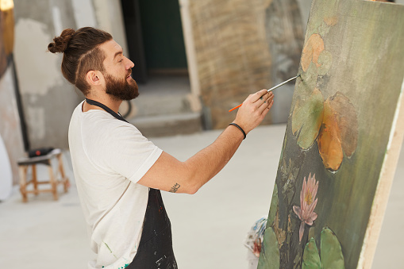
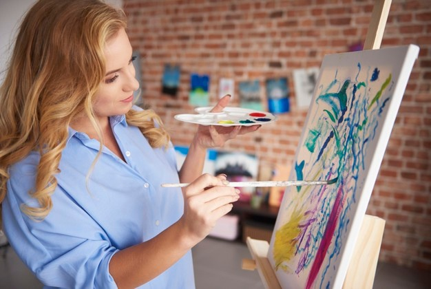
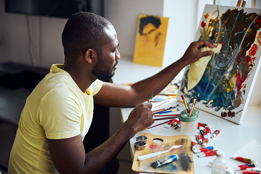

Painting is the practice of applying paint, pigment, color or
other medium to a solid surface (called the "matrix" or "support").
The medium is commonly applied to the base with a brush, but other implements,
such as knives, sponges, and airbrushes, can be used.
The expression of ideas and emotions, with the creation of certain aesthetic
qualities, in a two-dimensional visual language. The elements of this language—its
shapes, lines, colours, tones, and textures—are used in various ways to produce
sensations of volume, space, movement, and light on a flat surface.

| Name : | Gayle Mendes |
|---|---|
| Statement : | Many people take great comfort in the bathroom towels being the same
color as the soap, toilet paper, and tiles. It means there is a connection between
them, and an environment of order. Home is a place not only of comfort, but of control.
This sense of order, in whatever form it takes, acts as a shield against the unpredictability
and lurking chaos of the outside world.
My work is an examination of the different forms this shield takes, and the thinking
that lies behind it. I use domestic objects as the common denominators of our personal
environment. Altering them is a way of questioning the attitudes, fears and unwritten
rules which have formed that environment and our behavior within it. |
| Email id : | gayle@gmail.com |
| See work |

| Name : | Kina Coutinho |
|---|---|
| Statement : | Capturing the light is everything! As a plein air painter, it is always the
light that I remember most about any location. It is my inspiration.
Its elusive quality can transform a figure or a landscape in just a matter of seconds.
I strive to convey that sense of place by capturing its fleeting magic. |
| Email id : | kina@gmail.com |
| See work |

| Name : | Harry Vaz |
|---|---|
| Statement : | I like it when a place has been around long enough that there is a kind of
tension between the way it was originally designed to look and the way it looks now, as
well as a tension between the way it looks to whoever is caring for it and the way it
looks to me. Trouble is, the kinds of places I find most appealing keep getting closed
or torn down.
What do I want to say with my art?
Celebrate the human, the marks people make on the world. Treasure the local, the
small-scale, the eccentric, the ordinary: whatever is made out of caring. Respect what
people have built for themselves. Find the beauty in some battered old porch or cluttered,
human-scale storefront, while it still stands. |
| Email id : | harry@gmail.com |
| See work |